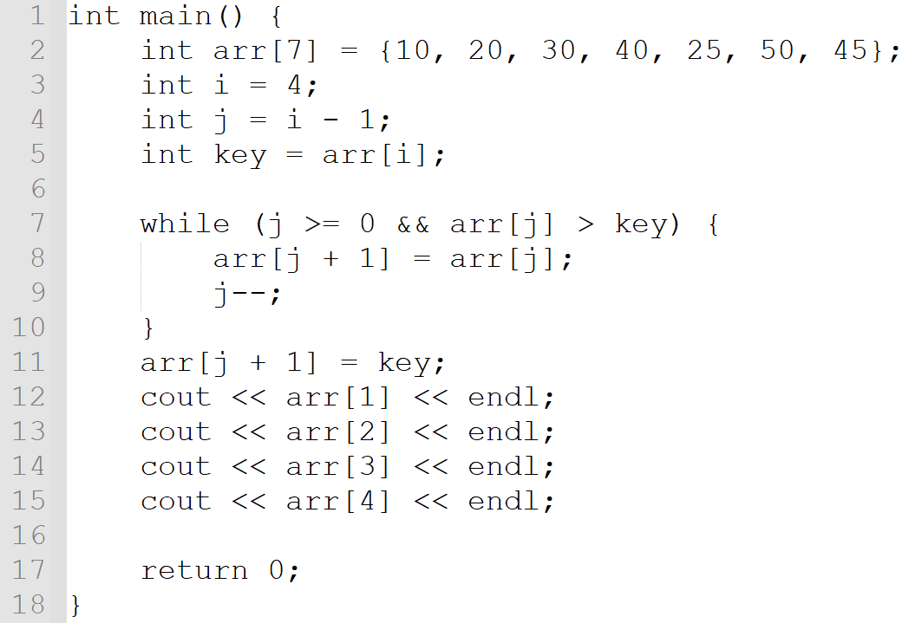
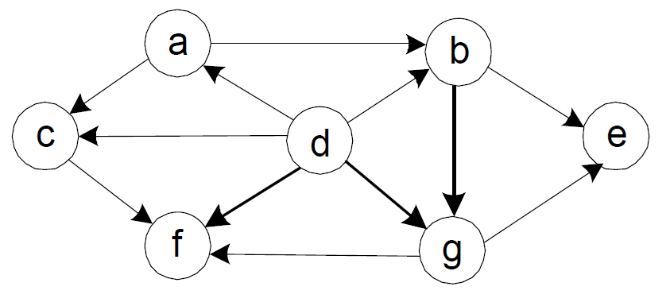
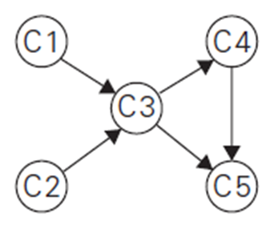
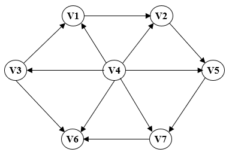
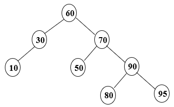
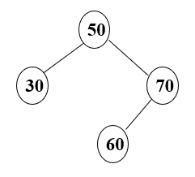
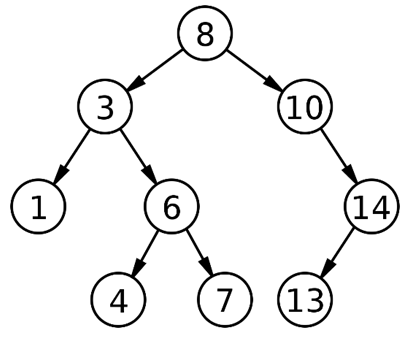
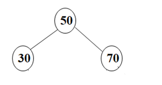
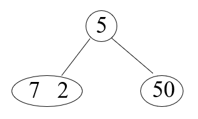
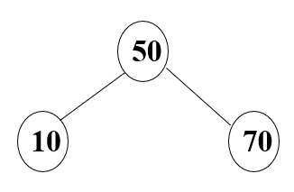

Time complexity of the binary search algorithm which finds a value in a sorted array is O(log n).
2112
1708
| Attempt | Time | Score | |
|---|---|---|---|
| LATEST | Attempt 1 | Time: 15 minutes | Score: 4.58 out of 10 |
Time complexity of the binary search algorithm which finds a value in a sorted array is O(log n).
Read the following C++ code carefully and determine the execution result at line number 12, 13, 14, and 15.

This is part of the insertion sort process where the value 25 at index 4 is inserted among other numbers. The values of arr after this process will be 10, 20, 25, 30, 40, 50, 45.
=================================================================
int main() {
int arr[7] = {10, 20, 30, 40, 25, 50, 45};
int i = 4;
int j = i - 1;
int key = arr[i];
while (j >= 0 && arr[j] > key) {
arr[j + 1] = arr[j];
j--;
}
arr[j + 1] = key;
cout << arr[1] << endl;
cout << arr[2] << endl;
cout << arr[3] << endl;
cout << arr[4] << endl;
return 0;
}
For the following graph, you are going to conduct the topological sorting. Select all starting node(s) for the topological sorting.

For the following graph, conduct the topological sorting using the DFS algorithm. Then, present the topological order as we discussed in the class. For the problem, you have to follow our convention of alphabetical order.

C1, C3, C4, C5
Answer: C2 --> C1 --> C3 --> C4 --> C5
For the following graph, you are going to conduct the topological sorting using the source removal algorithm (= Kahn’s algorithm).

Choose the initial “in-degree” values of each vertex as we discussed in the class.
You should traverse the array once to identify the smallest and largest numbers. Then, you should compute the difference between them. Thus, it requires a single pass through the array, resulting in a time complexity of O(n).
This is an AVL tree.

The tree is not a binary search tree. An AVL tree must be a BST.
Consider the following AVL tree. Determine the balance factor of the root node "50".

Consider the following AVL tree. If you add the number "55" to the tree, what type of rotation may be required to maintain its balance as an AVL tree?
For the tree problems in the exam, you have to use the level-by-level order to represent them. This is a sample tree to explain the level-by-level order.

Note that the root value 8 is the level 0 of the tree. Then, 3 and 10 are the level 1. Similarly, you can say that 1, 6, and 14 are the level 2. Thus, if someone asks you to write the third value of the level 2 of the tree, the answer should be 14. As another example, if someone asks you to identify the second value of the level 3, it should be 7.
Now, this is the question. For the following sample AVL tree below, you will add three numbers. First add a number "80". After that, add a number "90". Then, add a number "95". For the resulting AVL tree after three additions, choose the correct answers to the questions.

For the tree problems in the quiz, use the level-by-level order to represent them. For a sample tree below, the root value 5 is the level 0. And 7, 2, and 50 are the level 1. Thus, if someone asks you to write the second value of the level 1, the answer should be 2. As another example, if someone asks you to identify the third value of the level 1, it should be 50.

Now, this is the question. To the following 2-3 tree below, add a number "80" and then add a number "90".

For the resulting 2-3 tree, select the correct answer to the questions.
The result 2-3 tree:
Level 0: 50, 80
Level 0: 10, 70, 90
[Bonus Problem - 0.5 Points] This is a bonus problem. A fully correct answer will earn you 0.5 bonus points.
Assume that you have n coins with one fake coin that is lighter than the rest of coins. For the problem, you have to assume that the n is a big number. Now, you are going to find the fake coin using the algorithm you learned in the class with a balance scale like below. The time complexity of the algorithm is theta(log n). Is this true or false?
If the input number n is odd and you set aside the fake coin at the first trial, you can find it after one comparison. So, the best case time complexity is just 1. Thus, the time complexity of the algorithm can't be theta(log n).